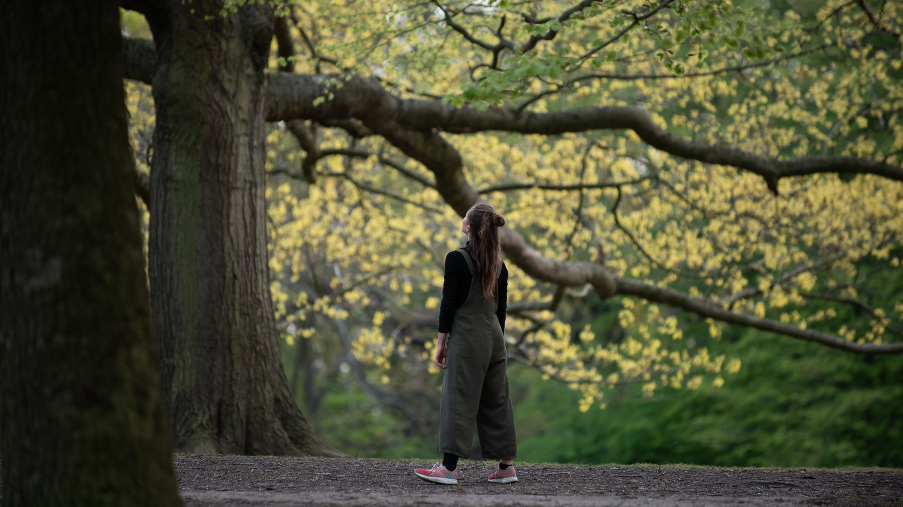
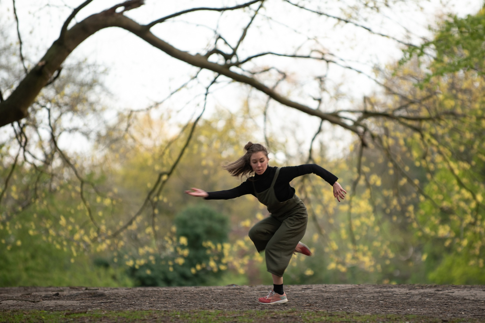
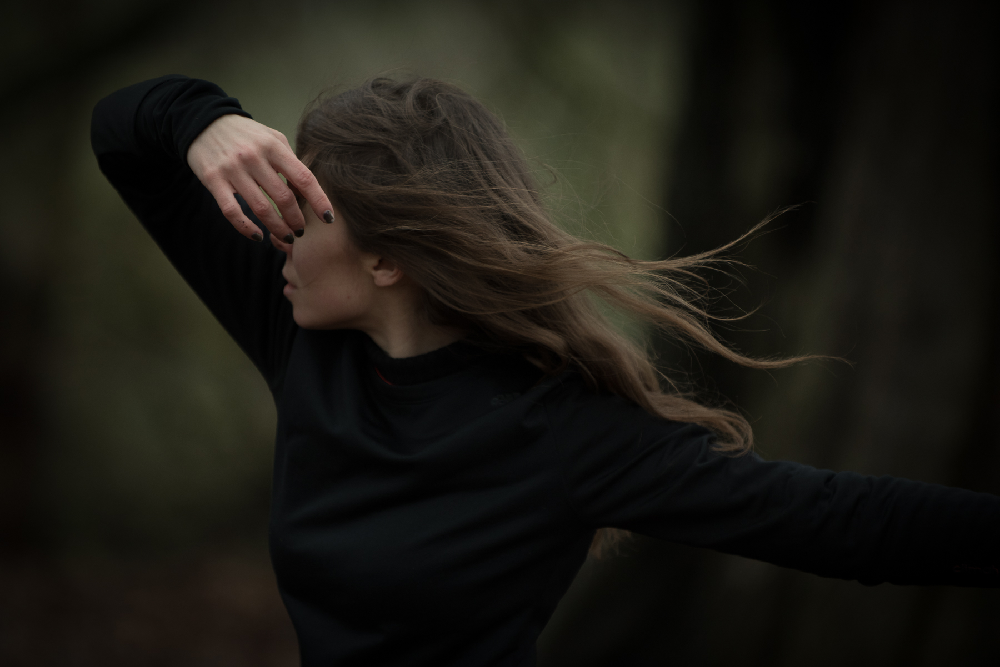
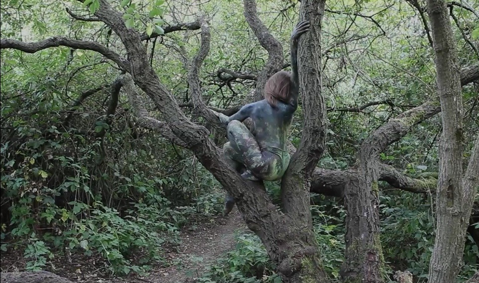
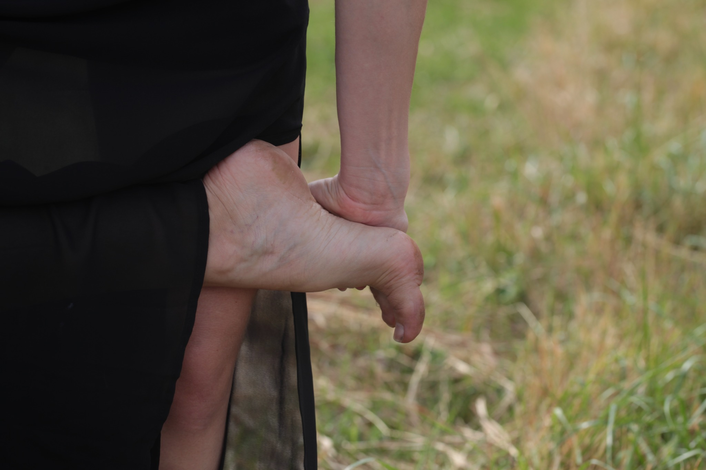
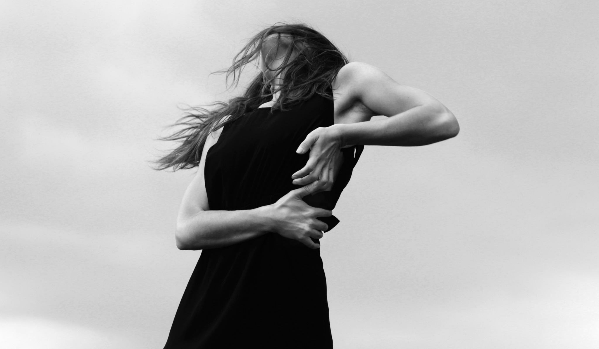

Photography by Frank Balbi Hansen
A project by Rachel Elderkin
Concept film ↓Fractured
Landscape
Dance / poetry / embodied practice
Scroll to enter
01 — The work
Moving between body, landscape and poetry.
Fractured Landscape is an ongoing research project into our human relationship with nature. Evolving within the transience of wild spaces, it explores the friction between the natural world and our built environment, while navigating a personal journey towards (re)belonging.
Moving between dance, poetry and embodied practices, this multi-disciplinary project takes material form through site-responsive interventions, workshops, writing, photography and film.

Photography by Frank Balbi Hansen
02 — A moving sketch
Concept film
A glimpse into the wider project.

Photography by Frank Balbi Hansen

Photography by Frank Balbi Hansen

to let my outline fade
and my bones take root
Film still from Fractured Landscape, shot by Rob McNeill

Photography by Noel Shelley

Photography by Noel Shelley
03 — In progress
A practice of listening
to the landscape.
This site is a living record of an evolving project. Further movement work, poetry and collaborations will be added as Fractured Landscape develops.